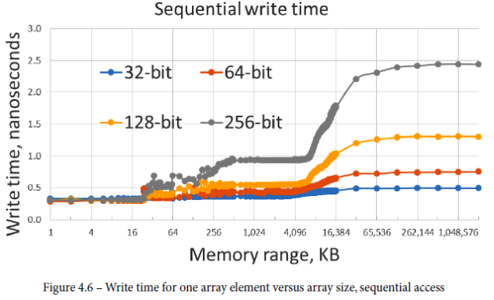

Memory
Note that waiting on memory does not count as waiting in this sense: when a thread is waiting on memory, it just takes longer to execute one instruction. When a thread is waiting on I/O, it has to make an operating system call, then it's blocked by the OS and isn't executing anything at all until the OS wakes it up to process the data.
Hardware Prefetch
When accessing memory sequentially, the hardware can begin transferring the next element of the array right away: the very first element still takes 7 nanoseconds to access, but after that, the hardware can start streaming the entire array from or to memory as fast as the CPU and the memory bus can handle it. Thus, the latency is no longer the limiting factor, the bandwidth is.
In general:
- prefetch is equally effective for accessing memory in increasing and decreasing orders.
- However, reversing the direction will incur some penalty until the prefetch adjusts to the new pattern.
- Accessing memory with stride, such as accessing every fourth element in an array, will be detected and predicted just as efficiently as dense sequential access.
- The prefetch can detect multiple concurrent strides (that is, accessing every third and every seventh element)
Guideline: Prefer regular predictable memory access patterns
Using perf to see the overall memory usage
$ perf stat -e cycles,instructions,L1-dcache-load-misses,L1-dcache-loads ./program
Optimizing memory access
General tips
If recomputing the value takes less than memory access, recomputing some values that could have been stored and retrieved from memory
Try to fit the current working data set into one of the caches, say, the L2 cache, and do as much work on it as possible before moving to the next section of the data.
Cache ways and Critical stride
Variables whose distance in memory is a multiple of the critical stride will contend for the same cache lines.
The critical stride can be calculated as:
critical stride = (number of sets) * (cahce line size) = (total cache size) / (number of ways).
E.g. 8KB cache with 4 ways, the critical stride is 2048 bytes (0x800)
The code cache works most efficiently if functions that are used near each other are also stored near each other in the code memory.
To keep the two modules contiguous in program memory, we can control the order in which the modules are linked together. The link order is usually the order in which the modules appear in the project window or makefile.
You can check the order of functions in memory by requesting a map file from the linker. The map file tells the address of each function relative to the beginning of the program.
- The map file includes the addresses of library functions linked from static libraries (.lib or .a), but not dynamic libraries (.dll or .so).
Alignment
A variable is accessed most efficiently if it is stored at a memory address which is divisible by the size of the variable.
- You can generally assume that the compiler takes care of this alignment automatically.
- The alignment of structure and class members may cause a waste of cache space
You may choose to align large objects and arrays by the cache line size
alignas(64) int BigArray[1024];
Use efficient data structures
Use std::vector over std::list
What if we dont know the number of items, and growing a vector is extremely inefficient because of the copying involved.
- We can use a block-allocated array
= It allocates memory in blocks of a fixed amount, usually small enough that they fit into the L1 cache (anywhere between 2 KB and 16 KB is commonly used). If we need grow, we just allocate a new block.
- Each block is used as an array. Only accessing the first element of each block is likely to incur a cache miss.
- It is similar to std::deque (unfortunately, the implementation in most STL versions is not particularly efficient, and sequential accesses to the deque are usually somewhat slower than to the vector of the same size)
What if we need insertion?
- Depend on the data usage. If the access pattern changes in time, the data structure should change as well to make sure that particular access pattern is optimal.
- If we need sorted order, but not very often, it maybe advantageous to separate the ordering from the storage. The data is stored in a vector or a deque, and the order is imposed on top of it by an array of pointers sorted in the desired order.
Explicit cache control instruction
Word of caution
At least from the author and his tests, these explicit cache control instructions don’t provide performance improvement in general.
Prefetch instruction
The prefetch instruction can be used for fetching a cache line that we expect to use later in
the program flow. However, this did not improve the execution speed in any of the examples
I have tested. The reason is that modern processors prefetch data automatically thanks to
out-of-order execution and advanced prediction mechanisms.
Nontemporal cache writes
Memory writes are more expensive than reads when cache misses occur in a write-back cache. A whole cache line has to be read from memory, modified, and written back in case of a cache miss.
The nontemporal write instructions (MOVNT) write directly to memory without loading a cache line.
- This could be useful in cases where we are writing to uncached memory and we do not expect to read from the same or a nearby address again before the cache line would be evicted.
- Results show nontemporal writes is only advantageous if a level-2 cache miss can be expected.
- If the cache contentions can be prevented in other ways then the nontemporal write instructions are not optimal.
- As a rule of thumb, it can be recommended to use non-temporal writes only when writing a memory block that is bigger than half the size of the largest-level cache.
Measuring memory and cache speed
Sequentially accessing (reading and writing) a large array
- memory range to read
- From 1 << 10 (1K) to 1 << 30 (1G), doubling every time
- Each read size
- int, long, __m128i, __m256i
- Perform several memory read per iteration
Random access an array
Precompute the random indices and store them in another array.
for (size_t i = 0; i < N; ++i) v_index[i] = i;
std::random_shuffle(v_index.begin(), v_index.end());
Random access (read) result

- the L1 cache of 32 KB
- The L2 cache is 256 KB.
- The L3 cache 8MB
Access latency doesn’t depend on the read size. It implies that the read speed is limited by latency and not by bandwidth.
Random access (write) result
Sequential access (write) result

- Y-axis scale is smaller than random access pattern, up range dropped from 7ns to 2.5ns
- The curves for different word sizes are no longer the same (highly hardware dependent).
- Same for L1 cache write, but different for other caches and main memory
- For main memory numbers, the write times double every time the word size doubles.
- This implies that the speed is now limited not by latency but by bandwidth. We're pushing the bits into memory as fast as the bus can transmit them, and it doesn't matter whether we group them into 64-bit chunks or 256-bit chunks that we call words, we've hit the bandwidth limit of the memory.